Section 10. Routing and Navigation
126. Routing in a Nutshell
- Needs the Router module. Steps needed: Configure the routes, Add a router outlet, add links.
127. Configuring Routes
- You configure routes in the app.module.ts file. Need to import the RouterModule. Import on the imports array. The order of the routes matters.
You should put more specific routes to the top.
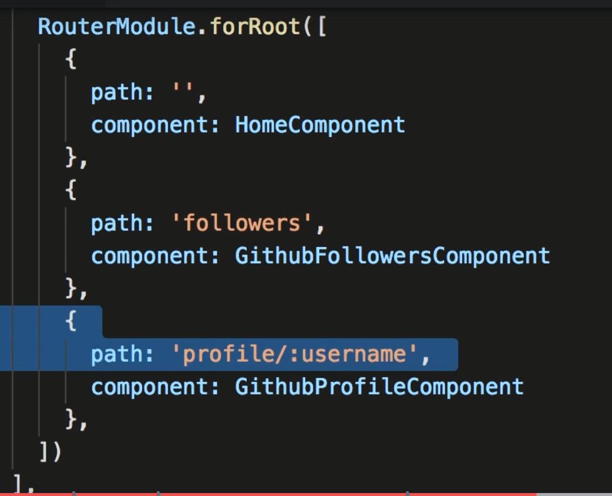
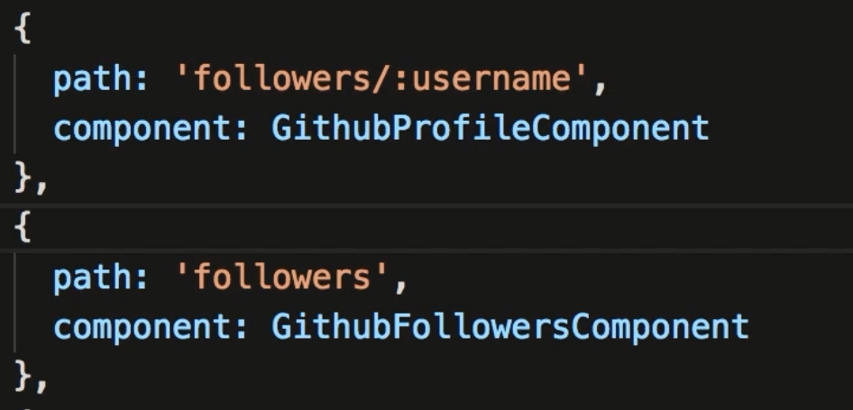
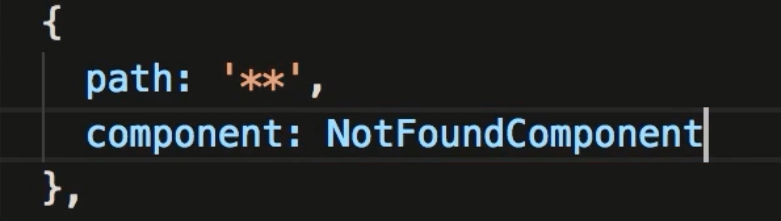
128. RouterOutlet
- In order for routing to work you need to put the router-outlet tag in your main component .html page
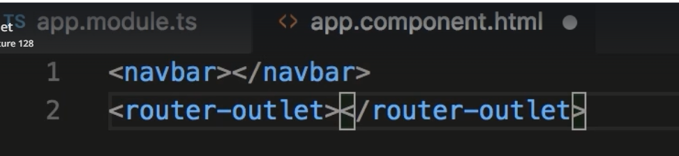
129. RouterLink
- With Angular apps you don't use standard href= for references to .html pages. Doing so you would re-download the entire web page which is not
what we want to do in a SPA.
- With Angular you replace the href= with routerLink=
- When creating dynamic links you create routerLinks as a property binding and reference parameters in an Array. The first value
is the path, and the following values are the router parameters.
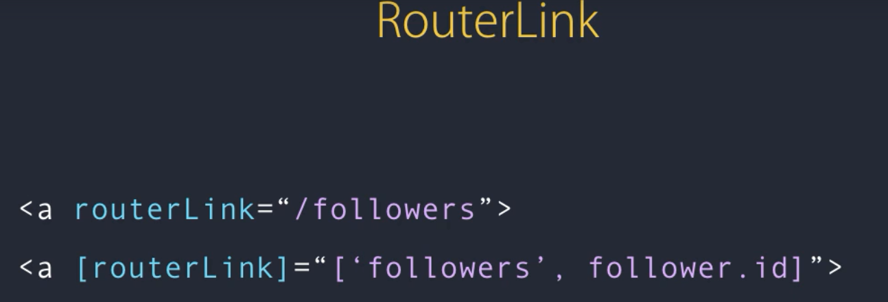
130. RouterLinkActive
- Up to now when we click a link the active link does not change to the clicked item. This is where we need RouterLinkAcive.
- You can add any classes you need here as long as they are in the quotes.
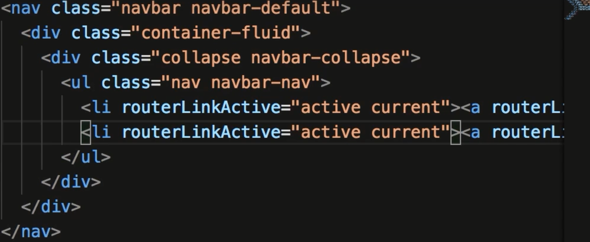
131. Getting the Route Parameters
- To get route parameters you have to inject ActivatedRoute from @angular/router and add to the constructor
- Below shows how to get the value from the route paramter. Note the + sign... it is a way of converting a string to an integer
- also: There are other methods besides get (ie: getAll, has, )
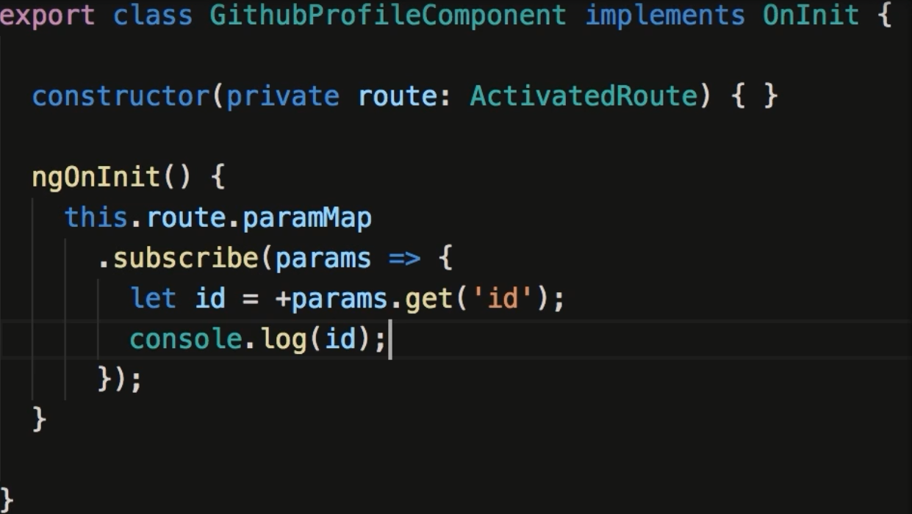
132. Why Route Parameters are Observables
- The point of this topic is to why you may need to use the subscription method of getting route params. The main point is that IF your
component allows naviagtion within the component you should use the observable method. If you don't, when you click a link that is to
navigate within the component....ngOnInit will NOT fire. ngOninit only triggers when the component is created which only happens when
a component is created and NOT when navigating within the component.
- If you are sure you will not be navigating within your own component you can use the snapshot method below.
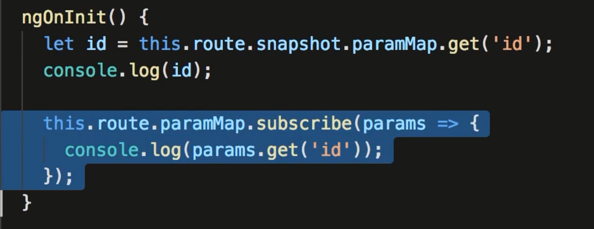
133. Routes with Multiple Parameters
- Places like Stackoverflow add extra parameters to help with SEO.
- Below shows what you need to do in the .html page, app.module.ts forRoot routes.
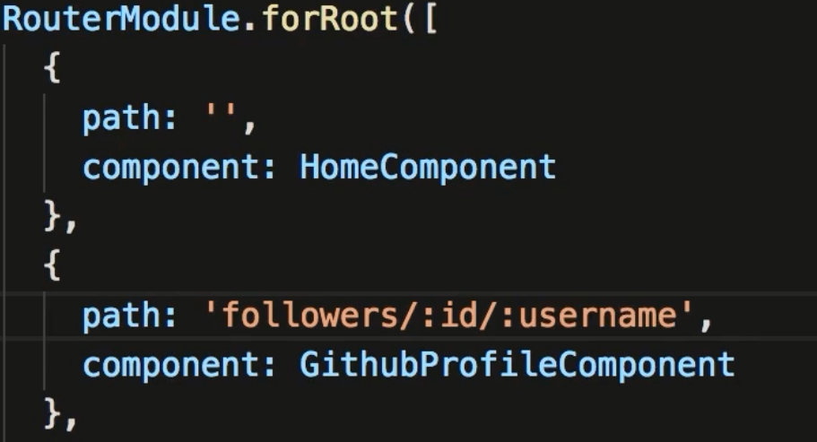
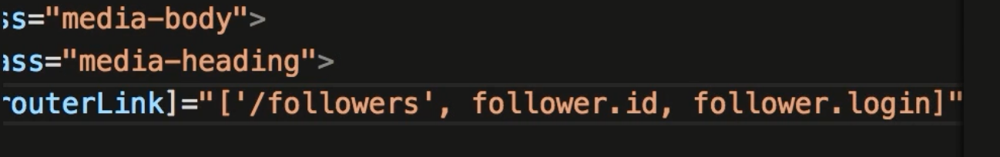
134. Query Parameters
- Query parameters are considered optional parameters to your routing. Things here could be page number, sort order etc.
Usually these values follow a ? (ie: url:4200/followers?page=1&order=newest)
- To add to your url add the queryParams property
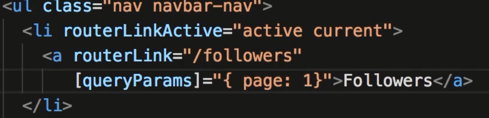
- Your component uses queryParamMap... again you can use snapshot method. But in most cases if your query param is a page number
chances are you are going to be passing parameters within the same component. therefore you will need to subscribe.
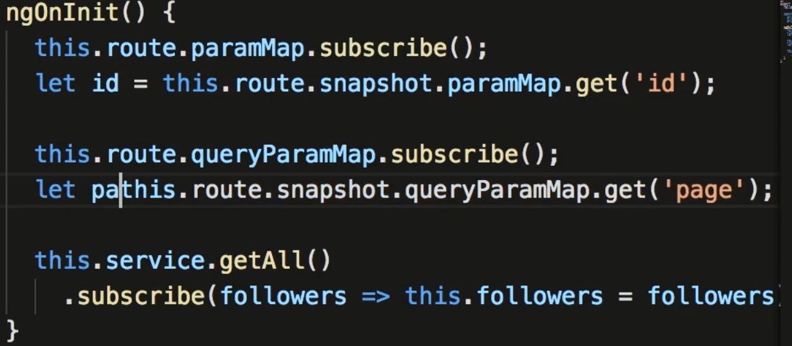
135. Subscribing to Multiple Observables
- In order to combine observables you need to import Observable and combineLatest
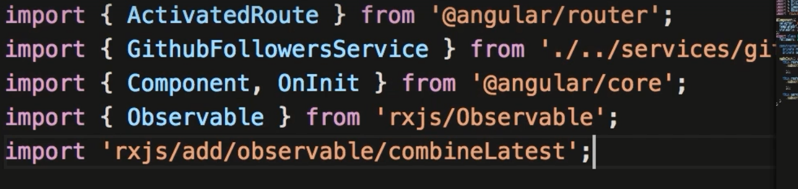
- This allows you to combine observables into one call.
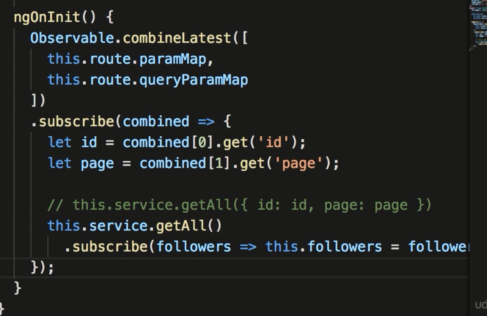
136. The SwitchMap Operator
- In this example you need to import some operators.
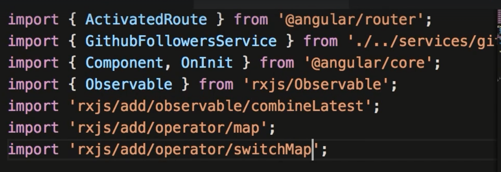
- Best to review this section if you need info.... hard to follow but basically with switchMap it returns the correct type compared
to the map operator. Then subscribe will have the proper values to work with.
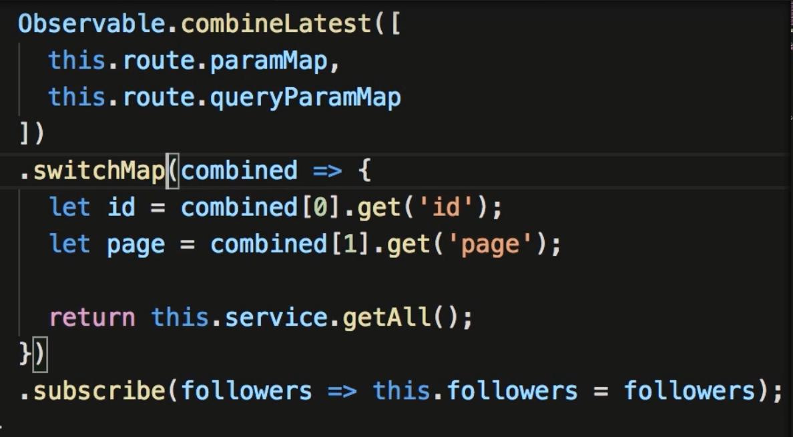
137. Programmatic Navigation
- This section shows how to use a method to get different url's
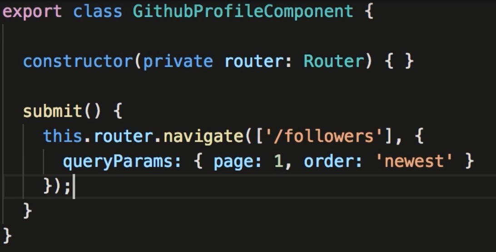
Assignment 9: Blog Archives.
- Create a simple app with a home page with 3 links that go to separate pages. Use 2 parameters, 1 for year, and 2 for day.
If a parameter is missing show a file not found page.
- app.module.ts. Shows the routes for the site.
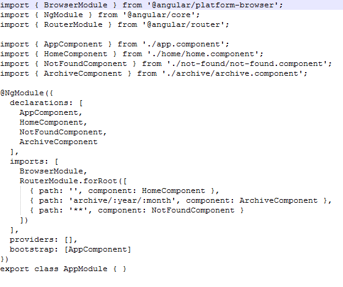
- home.component.ts
- home.component.html. This builds the links using ngFor dynamically using the array in the component.

- archive.component.ts. Takes non-observable parameters and assigns to local values.
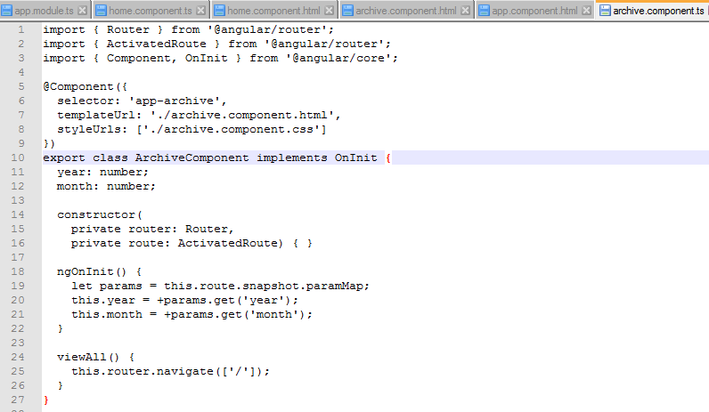
- archive.component.html. displays year and view All button
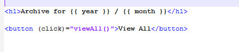